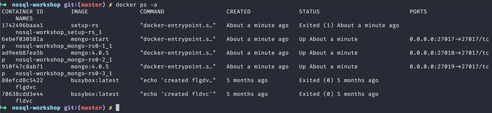

NoSQL Workshop - Mongo Transactions
Sections:
Production Considerations
Please read Production Considerations documenation in Official Documentation
Transactions
Please read the official documentation on MongoDB Transactions
If you would like to try out a replicaset then run the following to stop the docker container:
docker stop $(docker ps -a | grep mongo | awk '{print $1}')
This will stop the running mongo container that has been running in the workshop.
Now run the docker-compose yml script with the following command in the root of the repository:
docker-compose up
This will build several images and get a replica set running which we can confirm like this:

Now you should have 3 running mongo replica sets like this:

Now here is the script that the mongodb docs partly use:
"use strict";
// Enables or disables the features that persist data incompatible with earlier versions of MongoDB.
// You can only issue the setFeatureCompatibilityVersion against the admin database.
db.adminCommand({ setFeatureCompatibilityVersion: "4.0" });
// Start a session.
const session = db.getMongo().startSession( { readPreference: { mode: "primary" } } );
const employeesCollection = session.getDatabase("hr").employees;
// Start a transaction
session.startTransaction({
readConcern: { level: "snapshot" },
writeConcern: { w: "majority" }
});
// Operations inside the transaction
try {
employeesCollection.updateOne( { employee: 3 }, { $set: { status: "Inactive" } } );
} catch (error) {
// Abort transaction on error
session.abortTransaction();
throw error;
}
// Commit the transaction using write concern set at transaction start
session.commitTransaction();
session.endSession();
Let us get into the first replica set like this:
> docker exec -it $(docker ps -a | grep "nosql-workshop_mongo-rs0-1_1" | awk '{print $1}') /bin/bash
> mongo
Here is a screenshot of a possible shell session:
We can check on the replica set status with the following command:
rs.status()
Let us make another one of the replica sets secondary:
Transactions and Operations
Please read the official docs on MongoDB Transactions and Operations.
Bread Crumb Navigation
| Previous | Next |
|---|---|
| ← MongoDB Data Models | MongoDB Indexes Part I → |